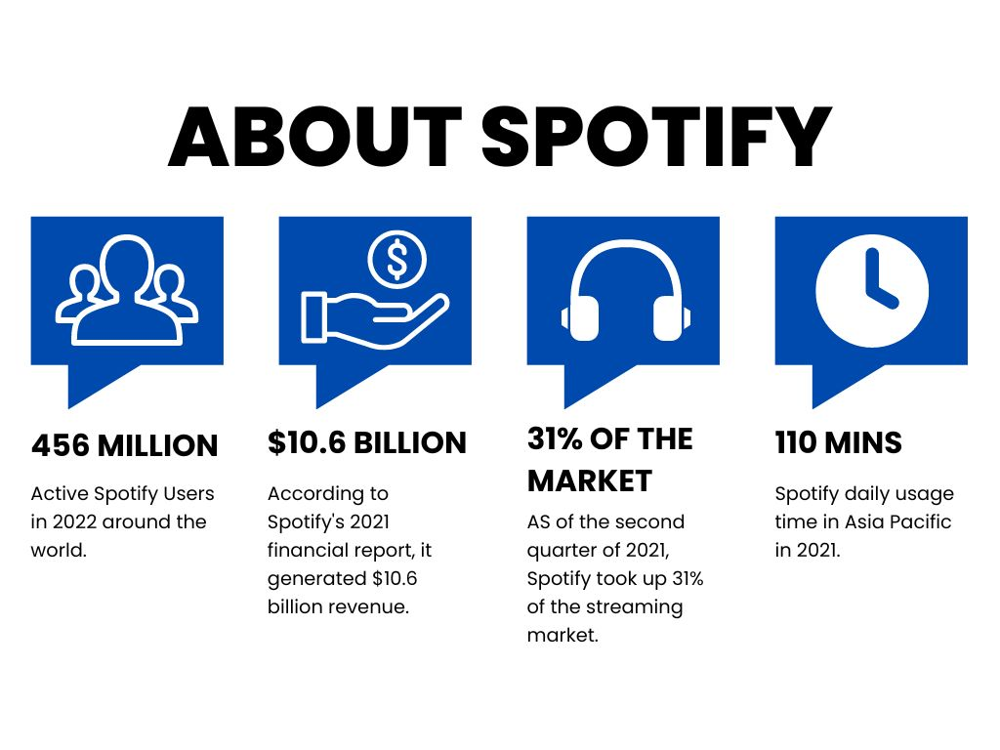

Spotify
Users of Spotify's music streaming service may access millions of songs and podcasts produced by a diverse spectrum of artists. It rose to prominence as one of the world's most widely used music streaming services since 2008.

Main functions of Spotify
- Users have the option of making their own playlists or listening to curated playlists made by Spotify or other users. Users may search for music by artist, album, genre, or mood.
- Podcasts on a variety of subjects are available on Spotify, including news, politics, humor, and entertainment. Users may find and subscribe to their preferred podcasts, and even make their own podcast mixes.
- Users of Spotify may share music on social media sites like Facebook, Twitter, and Instagram as well as follow other users. Users can work with one another to create playlists.
- Spotify has tools to assist users to find new music, such as curated playlists, personalized suggestions, and the option to follow and hear new music from the artists they love.
Benefits that Spotify brings
- With a user-friendly design and a variety of features including offline listening and voice control, Spotify is a handy and accessible method for users to discover and enjoy music and audio material.
- Numerous instructional podcasts on subjects like physics, history, and language study are available on Spotify. Users may benefit from learning new abilities and information from professionals and instructors all across the world.
- Spotify provides a variety of methods and services for musicians and content producers to make money from their audio work through sponsorships, advertising, and product sales.
New Media